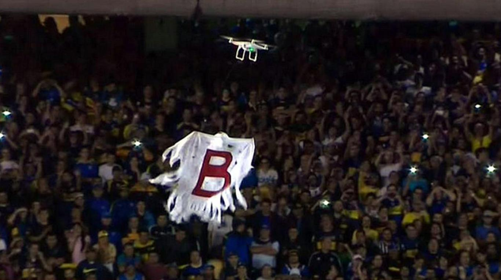

Drones
¿Qué es un dron?

Un dron es un vehículo aéreo que vuela sin tripulación. Su nombre se deriva del inglés drone, que en español significa “abeja macho”. Existen drones de diversos tamaños y con diferentes finalidades. Sin embargo, es importante indicar que este tipo de máquinas existen desde hace mucho tiempo, pese a que su fabricación resultaba un tanto costosa y que tampoco se contaban con las características que poseen actualmente.
La característica más resaltante de un dron es que su vuelo es controlado por control remoto, aunque existen algunos que son conducidos mediante la intervención de un software y no de manera directa por un piloto desde tierra. Los drones pueden ser de dos tipos: los que se asemejan a un avión y los que se parecen a un helicóptero, los cuales pueden mantenerse de manera estática en el aire.
Estos artefactos tienen su origen en el contexto militar, ya que fue allí donde se diseñó este tipo de robot aéreo con cámaras, GPS y toda clase de sensores, para ser usado como arma, para misiones de combate o vigilancia. Sin embargo, en la actualidad el uso de estos aviones, va más allá de buscar un fin bélico, su venta y distribución está orientada hacia diversos usos, como por ejemplo: en los estudios científicos, para la toma de fotografías y videos, entre otros.
Como ya se ha mencionado, los drones se manipulan mediante un control remoto, o por medio de aplicaciones para tablets o Smartphone. En la actualidad es posible encontrarse con app desarrolladas para iOS y Android. Las compañías encargadas de fabricar drones tienen como finalidad fabricarlo cada vez más intuitivo y sencillo de usar para todas las personas.
¿Para qué sirve un dron?
El origen del dron hay que situarlo en el contexto de la tecnología militar. Hay que tener presente que un robot aéreo sin piloto es un arma eficaz para combatir al enemigo. Si bien los drones surgieron en el ámbito militar, en la esfera civil están irrumpiendo con todo tipo de aplicaciones y usos:
- Tienen un uso eminentemente recreativo, lo que nos recuerda a otros artilugios menos sofisticados (las cometas tradicionales, los globos aerostáticos o las avionetas de vuelo sin motor).
- Permiten hacer fotografías y videos aéreos, algo que resulta de gran utilidad para promocionar un negocio (por ejemplo, la venta de casas). En el contexto de las imágenes aéreas también se utiliza como alternativa al clásico álbum de fotos para las bodas.
- Algunas compañías los están utilizando para enviar paquetes de pequeño tamaño. Esto puede representar en un futuro no muy lejano una auténtica revolución en el trasporte de algunas mercancías.
- Sus ámbitos de aplicación están cambiando rápidamente. De hecho, en las zonas donde se producen incendios en verano los drones pueden ser buenos aliados para combatir los incendios a través de un sistema láser incorporado que detecte el inicio de un foco de fuego.
- Las tareas tradicionales de vigilancia en los espacios abiertos también pueden incorporar la ayuda de estos dispositivos voladores. Pensemos en una manifestación multitudinaria con un riesgo potencial para la seguridad ciudadana o en tareas relacionadas con la lucha antiterrorista.
- Hay drones que están siendo empleados en tareas de rescate en el mar (detectan a los bañistas en peligro y lanzan un salvavidas para socorrerles).
- En el mundo agrícola y ganadero, los drones facilitan las tareas de supervisión y permiten disponer de información muy útil (por ejemplo, la posición exacta del ganado en una gran extensión de terreno).
A continuación alguna de las tareas realizadas por un dron:
-

- En Eventos: Los vimos en el último mundial de fútbol en Brasil sobrevolando la cancha, mostrando desde arriba el juego con los mejores ángulos, como ninguna otra cámara podía. Recitales, desfiles de moda y hasta protestas, son captados por estos mini helicóptero que como ventaja pueden volar más bajo y más cerca de la gente que un helicóptero real y tiene muchas más posibilidades de maniobra que un brazo de grúa. Los drones abren toda una nueva gama de posibilidades al periodismo fotográfico y a los cineastas.
- Como delivery: Esto parece realmente de ciencia ficción: En Rusia e Israel los drones ya se encuentran haciendo envíos de pizza. En china, la empresa de correo SF Express hace envíos a través de los pequeños helicópteros. Estados Unidos, esta vez se quedó atrás en la tendencia ya que Amazon, una de las empresas más grandes de comercio electrónico del país, lanzó un video promocionando el envío de productos en 30 minutos gracias a un drone. Sin embargo, desde la misma compañía señalaron que esto no va a ser posible por lo menos, por los próximos 5 años ya que la legislación actual no lo permite.
- En situaciones de emergencia: Los drones se destacan por su efectividad en situaciones límites, especialmente en áreas que quedaron aisladas o de difícil acceso. Se demostró la importancia de su uso por ejemplo, en zonas que fueron azotadas por desastres naturales. Su velocidad de vuelo permite recorrer áreas enormes en muy poco tiempo. Permitiendo llevar la ayuda necesaria, traslado de bancos de sangre o en una fase previa para evaluar la ayuda necesaria en la zona o la forma de arribo al lugar.
- Búsqueda de personas: La posibilidad de volar a poca altura junto con una cámara de alta calidad que transmite en tiempo real, permite el reconocimiento inmediato de personas perdidas en bosques o montañas, por ejemplo. En España se desarrolló, LifeSeeker, un sistema integrado con los drones que permite a éstos conectar con teléfonos móviles que quedaron sin señal e informar de su posición exacta.
- Control fiscal: En Argentina el gobierno se hizo eco de esta tecnología y los VANT se emplean para sobrevolar terrenos que fueron declarados al fisco como baldíos. El área se sobrevuela y se corrobora si efectivamente no están construidos.
- Vigilancia fronteriza: España comenzará a utilizarlos a través de la Guardia Civil, para controlar los ingresos marítimos. Asimismo, Estados Unidos está evaluando su uso para controlar la frontera Mexicana y así disuadir posibles inmigrantes ilegales y el tráfico de drogas.
- Zonas rurales: Los agricultores le vienen sacando mucho provecho a los drones ya que los utilizan en diferentes funciones:
- Por un lado, gracias a las fotos y videos de alta definición que permite la GoPro incorporada posibilita el monitoreo de grandes dimensiones que de otra manera seria imposible transitar. Este equipo puede recorrer más de mil hectáreas en sólo una hora permitiendo la localización temprana de plagas o malezas.
- Por otro lado, se utilizan estas naves sin tripulación para el control del rebaño.
- También se usa con fines inmobiliarios, les da a los agricultores la posibilidad de mostrar con exactitud las características de un predio en pocos minutos. Por último, en Asia se estiman que hay unos 2400 drones utilizados para esparcir pesticidas y fertilizantes en grandes terrenos rurales.
- Control de incendios forestales: En España se crearon los primeros VANT especialmente diseñados para la prevención y el control de incendios forestales. Su tarea es reunir la información necesaria para anticiparse en lo posible a la prevención y expansión de incendios.
- Investigaciones arqueológicas: Son utilizados para buscar y analizar restos arqueológicos gracias a su capacidad de recorrer y tomar fotografías de áreas extensas. En Perú se utilizaron los VANT para estudiar las ruinas de Cerro Chepén obteniendo más de 700.000 fotografías en sólo diez minutos, casi 50 veces más fotos que las que se pueden obtener por otros medios.
- Fines geológicos: En todo el mundo los drones se utilizan para acceder a zonas peligrosas para el ser humano. Tal es el caso de los volcanes en actividad. Los drones son capaces de tomar muestras del interior del volcán y de las cenizas que emite, permitiendo predecir erupciones logrando alertar con mayor anticipación a las poblaciones cercanas. Por otro lado, esa información también se utiliza para profundizar en la investigación científica del estudio del centro de la tierra. Asimismo, se han utilizado drones para estudiar e intentar predecir la ruta de un huracán. Estos equipos fueron enviados al ojo de un huracán en Estados Unidos que, tomando índices de temperatura y humedad, permitió pronosticar el camino y alertar a la población disminuyendo los daños.
- Investigaciones biológicas: Se han utilizado estos aviones teledirigidos para reproducir la ruta de aves en libertad. Se registra el vuelo con un GPS incorporado al ave y luego se reproduce con un drone. Los investigadores pueden determinar de esta manera el por qué del recorrido animal al tener la posibilidad de registrar exactamente las características de la zona donde vuela.
- Manipulación de materiales nocivos: Como decíamos, los drones son utilizados para las tareas que son demasiado peligrosas para el ser humano. Permitiendo la manipulación, limpieza y estudio de materiales nocivos para la salud de las personas. En Japón, más precisamente en Fukushima, se utilizaron drones para obtener una vista precisa del interior del reactor nuclear con el objetivo de elaborar un plan de limpieza y prevención de futuras fugas. La utilización del avión no tripulado en este caso fue fundamental, ya que se pudo acceder a zonas que ningún ser humano podría tolerar dado el alto índice de radiación en el área.
- Como satélites: Se investiga la posibilidad de utilizar drones para crear redes de internet en áreas donde aún no llega. Estos drones funcionarían con energía solar y podrían cumplir las tareas de los satélites pero más baratos y en una cobertura específica.
- Jugar con drones: Como no podía ser de otra manera los drones están preparando el terreno para los juegos del futuro. Permitiendo capturar imágenes reales de los diferentes escenarios del mundo y no como son hasta ahora, interpretaciones de los paisajes. Lo que hoy es seguro es que existen modelos disponibles para los aficionados del aeromodelismo. Con un precio medianamente accesible, estos naves vienen con cámaras de muy buena calidad, y muy fáciles de maniobrar desde cualquier dispositivo inteligente. Los drones llegaron para quedarse, los usos parecen aumentar cada día de la mano de la población civil y científica. Estamos viviendo el auge de la creatividad en funciones y aplicaciones de este aparato, las cuales parecen realmente infinitas. Probablemente, algún día con el avance de la tecnología, estas fascinantes naves nos van a permitir explorar zonas fuera del planeta y hasta donde la imaginación dé.


Pero... ¿Cuál es el origen de la palabra "drone"?

Pregunta sencilla que se formula mucha gente y cuya respuesta la podemos buscar atendiendo a varios puntos de vista. Si atendemos a la definición que nos brinda la Real Academia de la Lengua Española al buscar la palabra “dron” del inglés “drone” veremos que hace referencia a una “aeronave no tripulada”.
“No tripulada” hace referencia claramente a que el manejo de la misma se hace a distancia o de forma remota (por control remoto se entiende). Pero ahora bien, ¿qué tipos de vehículo podemos clasificar como aeronaves? Si nos ceñimos a la definición de la RAE también, veremos que será cualquier vehículo que navega por el aire.
Por tanto nos quedamos con que un drone es todo aquél vehículo aéreo manejado de forma remota. Coloquialmente podríamos decir que un drone es un robot aéreo, pero las agencias de seguridad aérea y organismos oficiales, ante la generalidad de la palabra drone, prefieren usar términos como RPAS (del inglés, Remote Piloted Aircraft System) o UAV (Unmanned Aerial Vehicle). Como veis todos ellos incluyen la característica de volar como algo inherente al significado de un drone, UAV o RPA.
De dónde viene la palabra "Drone"
Como muchos términos anglosajones que terminamos acuñando como propios en otras lenguas, la palabra “drone” original del inglés etimológicamente se refiere a la abeja macho (male bee). En concreto se refiere a la abeja macho cuyo único trabajo es emparejarse con la reina. De este modo los “drones” a diferencia de las abejas trabajadoras no se tienen que preocupar por recolectar nectar o polen, así que siempre han sido vistas como ociosas y hacia el siglo XVI, este término se popularizó al usarse para humanos. Más o menos al mismo tiempo “drone” empezó a surgir como verbo, con el significado de hacer zumbidos como las abejas, o ser molesto como el zumbido de una abeja al hablar de determinado modo monótono.

Tenemos una evolución por tanto de este significado de “abeja macho” original del inglés antiguo en torno al siglo XVI al actual significado de hoy que proviene del inglés pilotless aircraft o aeronave sin piloto, termino que fue descrito en una publicación de “Popular Science” en Noviembre de 1946:
“Los drones, tal como se llaman las naves manejadas por radio control tienen muchas aplicaciones, civiles y militares. Algún día guiarán desde naves nodrizas enormes flotas de larga distancia y transportaran cargas a través de continentes y océanos. Drones de larga distancia armados con bombas atómicas volarán y bombardearán sus objetivos a la perfección“.
Existen otras referencias a la palabra drone como abeja, pero éstas ya son las propias de la evolución de la palabra para significar lo que la palabra drone significa hoy en día, recordamos, aeronave no tripulada. Éstas referencias datan de 1935 cuando el oficial estadounidense William H. Standley asistió a una demostración que la Marina Real Británica daba con una nueva aeronave por control remoto llamada el DH 82B Queen Bee. De vuelta a los EE.UU. Standley ordenó construir algo parecido para la marina estadounidense y la persona a cargo, el comandante Delmer Fahney acuño el término drone para referirse a este objeto. El termino se estableció como referencia para una aeronave controlada por un operador desde el suelo o desde una nave nodriza.
Durante la Segunda Guerra Mundial, la armada y marina estadounidense comenzó a producir drones para identificar objetivos y drones para asalto en combate. El drone “aeronaútico” también significó como verbo la acción de convertir o modificar una aeronave pilotada en una remotamente pilotada. En 1966, el medio “Helicopter News” publicaba que la empresa Kaman había conseguido transformar varios helicópteros a modelos sin piloto (“successfully droned various helicopters“).
Sin duda fue el 11-S y la campaña contra el terrorismo internacional la que disparó el uso del drone para eliminar objetivos terroristas a larga distancia y la que por supuesto también terminó de encumbrar el término drone como algo común en el vocabulario de a pié, muy normal su uso como verbo en sitios como Pakistán, Afganistán y muchos otros países en los que comenzaron las primeras operaciones “conocidas” con drones.
En Estados Unidos las críticas por el uso de drones han tergiversado mensajes tan acuñados como el “Yes We Can” de Obama en “Yes We Drone” con el objetivo de protestar por los mismos; o por ejemplo una frase común en America en relación al uso de los polémicos taser de la policía “Don´t tase me, bro” ha mutado para ser “Don´t drone me, bro“.
Hay que recordar que un drone no sólo puede ser pilotado por un operador humano, sino que puede volar de forma autónoma siguiendo planes de vuelo ordenados a través de un software y siguiendo sistemas de posicionamiento por coordenadas como el GPS o el GLONASS. Y aunque siempre han sido muy asociados a labores militares, los drones también son usados para rescate, vigilancia, control del tráfico, monitoreo del tiempo climático, extinción de fuegos y la agricultura entre otras aéreas.
Recientemente el drone se ha considerado para un gran número de aplicaciones civiles. Hace ya unos años Amazon desarrolla un plan que ya ha estado probando con éxito para el reparto a domicilio mediante drones; se espera que este tipo de transporte aéreo con drones sea factible para repartir en un radio de 10 kilómetros pudiendo rebajar costes de entre los 5 y 10 euros a pocos céntimos, una vez esté en pleno rendimiento.